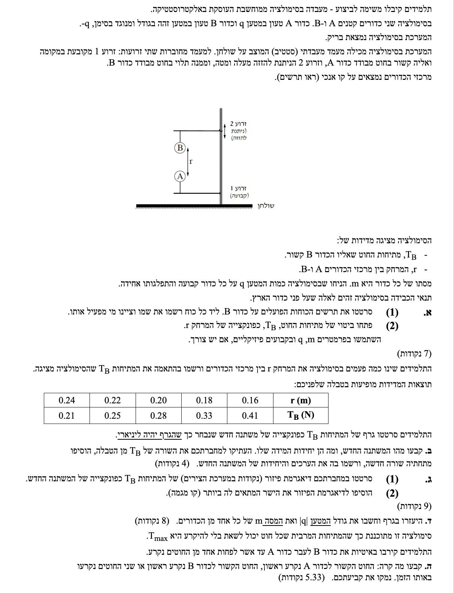
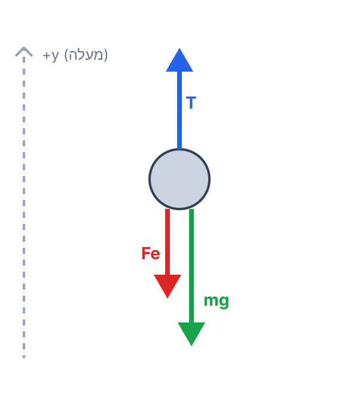
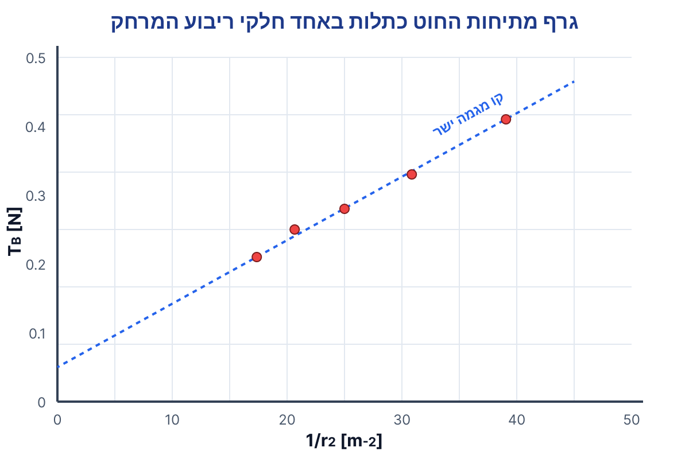

שלום תלמידים יקרים! לפני שניגש לסעיפים, בואו נבין את הבעיה הפיזיקלית שעומדת לפנינו:
יש לנו שני כדורים בעלי מטענים הפוכים (\( +q \) ו- \( -q \)), ולכן הם מושכים זה את זה בכוח חשמלי. המערכת נמצאת בשיווי משקל סטטי (אין תנועה, תאוצה שווה לאפס), ולכן נשתמש בחוק הראשון של ניוטון עבור כל אחד מהכדורים בנפרד.
כדור B נמצא בשיווי משקל. מסתו \( m \), מטענו בסימן מינוס ומטענו של כדור A בסימן פלוס (המטענים שווים בגודלם \( |q| \)). המרחק בין מרכזי הכדורים הוא \( r \).
סעיף א'(1): לשרטט תרשים כוחות הפועלים על כדור B ולציין מי מפעיל כל כוח.
סעיף א'(2): למצוא ביטוי למתיחות החוט \( T_B \) הפועלת על כדור B, כפונקציה של המרחק \( r \).
כיוון שהגוף במנוחה, נשתמש בחוק הראשון של ניוטון (שיווי משקל):
הכוח החשמלי בין שני מטענים נקודתיים מחושב על פי חוק קולון (מתוך דף הנוסחאות):
וכוח הכובד (משקל הגוף):
חלק א(1) - תרשים כוחות (FBD) לכדור B:

פירוט הכוחות הפועלים על כדור B:
חלק א(2) - פיתוח הביטוי:
נקבע ציר אנכי (y) חיובי כלפי מעלה. נרשום את משוואת הכוחות על ציר זה עבור כדור B:
\[ \Sigma F_y = 0 \] \[ T_B - mg - F_E = 0 \]נעביר אגפים ונציב את חוק קולון עבור \( F_E \). נזכור שגודל המטען של כל כדור הוא \( q \):
\[ T_B = mg + k\frac{q \cdot q}{r^2} \]שימו לב! תמיד קבעו והראו את ציר הייחוס שלכם בשרטוט. קבענו את ציר ה-y חיובי כלפי מעלה. לכן, כוח המתיחות קיבל סימן פלוס במשוואה, וכוח הכובד (\( mg \)) והכוח החשמלי קיבלו סימן מינוס. הערך של \( g \) הוא תמיד חיובי (\( 10 \, \text{m/s}^2 \)), הסימן נגזר רק מכיוון הציר!
התלמידים מדדו ערכים של \( T_B \) עבור מרחקים \( r \) שונים והציגו אותם בטבלה. הביטוי התיאורטי שמצאנו בסעיף א' הוא \( T_B = mg + k\frac{q^2}{r^2} \).
למצוא משתנה חדש כך שגרף של \( T_B \) כפונקציה של המשתנה החדש יהיה ליניארי (קו ישר). לקבוע את יחידותיו, ולהוסיף שורה לטבלה עם הערכים החדשים.
משוואת קו ישר (פונקציה ליניארית):
נשווה את הביטוי הפיזיקלי שמצאנו למשוואת קו ישר. אנו רוצים ש- \( T_B \) יהיה המשתנה התלוי (בציר האנכי).
| \( T_B \) | = | \( kq^2 \) | \( \cdot \) | \( \frac{1}{r^2} \) | + | \( mg \) |
| משתנה תלוי | שיפוע | משתנה בלתי תלוי | נקודת חיתוך |
מכאן אנו רואים בבירור שכדי לקבל יחס ליניארי, המשתנה החדש צריך להיות \( \frac{1}{r^2} \).
יחידות המידה של המשתנה החדש: מכיוון ש- \( r \) נמדד במטרים (\( \text{m} \)), הרי ש- \( r^2 \) נמדד ב- \( \text{m}^2 \). לכן, המשתנה \( \frac{1}{r^2} \) נמדד ביחידות של \( \frac{1}{\text{m}^2} \) או \( \text{m}^{-2} \).
הוספת השורה לטבלה:
נחשב את ערכי המשתנה החדש (מעוגלים ל-2 ספרות אחרי הנקודה לשם נוחות ההצגה):
| \( r \,\, (\text{m}) \) | 0.24 | 0.22 | 0.20 | 0.18 | 0.16 |
|---|---|---|---|---|---|
| \( T_B \,\, (\text{N}) \) | 0.21 | 0.25 | 0.28 | 0.33 | 0.41 |
| \( \frac{1}{r^2} \,\, (\text{m}^{-2}) \) | 17.36 | 20.66 | 25.00 | 30.86 | 39.06 |
שאלות פיזור (לינאריזציה) מופיעות כמעט בכל בגרות בפיזיקה! המטרה היא להביא משוואה לא-לינארית (כמו יחס הפוך לריבוע המרחק) למבנה מוכר של קו ישר. זכרו: כל מה שמכפיל את המשתנה החדש שלנו הופך לשיפוע הגרף, וכל מה שמתווסף (ללא תלות במשתנה) הופך לנקודת החיתוך עם הציר האנכי. כאן נוכל להשתמש בשיפוע כדי למצוא את המטען, ובנקודת החיתוך כדי למצוא את המסה!
נתוני הטבלה שהשלמנו בסעיף הקודם: זוגות של ערכים המייצגים את המשתנה הבלתי תלוי \( \frac{1}{r^2} \) ואת המשתנה התלוי \( T_B \).
לסרטט דיאגרמת פיזור במערכת צירים (כולל כותרות ויחידות), ולהוסיף קו מגמה (הישר המתאים ביותר).
נבנה מערכת צירים. הציר האופקי ייצג את \( \frac{1}{r^2} \) (מ-0 עד 45). הציר האנכי ייצג את \( T_B \) (מ-0 עד 0.45). נסמן את נקודות המדידה ונעביר קו מגמה שעובר קרוב ככל האפשר לכל הנקודות.

בבגרות לא מספיק "בערך" לצייר גרף. צריך לבנות אותו כמו שצריך: לבחור מערכת צירים שתנצל לפחות כחצי עמוד כדי שהנקודות והקריאה מן הגרף יהיו ברורות, לקבוע טווחים מתאימים כך שכל הנתונים ייכנסו בנוחות בלי לדחוס את כולם לפינה, ולסמן שנתות אחידות ומרווחות היטב. על כל ציר חייבים לכתוב גם את שם הגודל וגם את יחידות המידה שלו, למשל \( \frac{1}{r^2} \) ו-\( T_B \). את הנקודות מסמנים בזהירות בעזרת סרגל, וכשצריך קו מגמה לא "מחברים נקודה לנקודה" אלא מעבירים ישר שמייצג בצורה הטובה ביותר את המגמה הכללית של הפיזור. שימוש בסרגל הוא חובה גם בצירים וגם בקו המגמה, כי גרף נקי, קריא ומדויק שווה נקודות גם אם החישובים עצמם נכונים.
מהמשוואה שמצאנו בסעיף ב', הקשר הליניארי הוא: \( T_B = (k \cdot q^2) \cdot \frac{1}{r^2} + mg \).
קבוע קולון מדף הנוסחאות: \( k = 9 \cdot 10^9 \, \frac{\text{N}\cdot\text{m}^2}{\text{C}^2} \).
תאוצת הכובד: \( g = 10 \, \frac{\text{m}}{\text{s}^2} \).
להשתמש בגרף (שיפוע ונקודת חיתוך) כדי למצוא את המסה \( m \) ואת גודל המטען \( |q| \).
חישוב שיפוע של קו ישר מתוך שתי נקודות שנמצאות על קו המגמה (ולא בהכרח נקודות מהטבלה):
שלב 1: מציאת המסה \( m \) בעזרת נקודת החיתוך עם הציר האנכי.
מהגרף ניתן לראות כי קו המגמה חותך את הציר האנכי (כאשר המשתנה האופקי שווה אפס) בערך ב- \( T_B = 0.05 \text{ N} \).
מכיוון שנקודת החיתוך התיאורטית היא \( mg \), נרשום:
\[ mg = 0.05 \] \[ m \cdot 10 = 0.05 \] \[ m = 0.005 \text{ kg} \]שלב 2: מציאת המטען \( |q| \) בעזרת שיפוע הגרף.
נבחר את הנקודה הראשונה והנקודה האחרונה שנמצאות בבירור על קו המגמה שציירנו:
Point 1: (17.36, 0.21)
Point 2: (39.06, 0.41)
נחשב את השיפוע:
\[ a = \frac{0.41 - 0.21}{39.06 - 17.36} = \frac{0.20}{21.70} = 0.00922 \,\, (\text{N}\cdot\text{m}^2) \]מבחינה תיאורטית, השיפוע שווה ל- \( k \cdot q^2 \). לכן נשווה ונבודד את \( q \):
\[ k \cdot q^2 = 0.00922 \] \[ 9 \cdot 10^9 \cdot q^2 = 0.00922 \] \[ q^2 = \frac{0.00922}{9 \cdot 10^9} = 1.024 \cdot 10^{-12} \] \[ |q| = \sqrt{1.024 \cdot 10^{-12}} = 1.012 \cdot 10^{-6} \text{ C} \]נעגל את התשובות הסופיות ל-3 ספרות משמעותיות:
כשמחשבים שיפוע מתוך גרף, לא חייבים לבחור נקודות שמופיעות בטבלה המקורית. להפך, בדרך כלל עדיף לבחור שתי נקודות ברורות ורחוקות זו מזו שנמצאות ממש על קו המגמה שציירתם, כי כך החישוב יציב ומדויק יותר. מותר להשתמש בנקודות מהטבלה רק אם הן באמת יושבות על הקו שציירתם או קרובות אליו מאוד. אם בוחרים נקודה מהטבלה שאינה על הקו, מתקבל שיפוע של נקודה בודדת ולא של המגמה הכללית, וזה עלול להוביל לטעות. לכן בבגרות מסתכלים קודם על הישר שצויר, מסמנים עליו שתי נקודות נוחות לקריאה, ורק אחר כך מציבים בנוסחת השיפוע.
המערכת מתחילה להתקרב באיטיות, כלומר המרחק \( r \) קטן, עד שאחד החוטים נקרע. נתון ששני החוטים בעלי אותה מתיחות מרבית מותרת (\( T_{\text{max}} \)).
לקבוע איזה חוט ייקרע ראשון (זה של כדור A, של כדור B, או שניהם יחד) ולנמק פיזיקלית.
נשתמש בחוק הראשון של ניוטון עבור שיווי המשקל הסטטי (קירוב באיטיות מאפשר התייחסות כמצב רציף של שיווי משקל) עבור שני הכדורים בנפרד.
כבר מצאנו בסעיף א' את ביטוי המתיחות עבור כדור B (החוט העליון):
\[ T_B = F_E + mg \]כעת, ננתח את הכוחות הפועלים על כדור A (הכדור התחתון). כדור A נמשך כלפי מעלה על ידי הכוח החשמלי \( F_E \). כדי שיישאר במקומו ולא יעוף למעלה, חוט A חייב למשוך אותו כלפי מטה יחד עם כוח הכובד. המשוואה על ציר y (חיובי למעלה) עבור A:
\[ \Sigma F_y^{(A)} = 0 \] \[ F_E - mg - T_A = 0 \]נבודד את המתיחות בחוט A:
\[ T_A = F_E - mg \]השוואה ונימוק מסכם:
כאשר התלמידים מקרבים את הכדורים (המרווח \( r \) קטן), לפי חוק קולון גודל הכוח החשמלי \( F_E \) בין הכדורים גדל. הדבר גורם להגדלת המתיחות בשני החוטים.
נשווה בין המתיחויות בכל רגע נתון:
\[ T_B - T_A = (F_E + mg) - (F_E - mg) = 2mg \]אנו רואים ש- \( T_B \) תמיד גדול מ- \( T_A \) בהפרש קבוע של \( 2mg \). מכיוון שלשני החוטים יש את אותו ערך מקסימלי \( T_{\text{max}} \) שהם יכולים לשאת, הרי שהחוט בעל המתיחות הגבוהה יותר יגיע לערך זה ראשון.
תלמידים רבים מנסים "לנחש" בראש סעיפים כאלה ולעתים מסתבכים. הדרך הכי טובה, בטוחה ופיזיקלית נכונה היא לעשות מה שעשינו כאן: לכתוב את משוואות ניוטון (ΣF=ma) באופן מסודר עבור כל גוף בנפרד. מרגע שהמשוואות רשומות מול העיניים (\( T_B = F_E+mg \) לעומת \( T_A = F_E-mg \)), התשובה קופצת החוצה בצורה מתמטית חד-משמעית ומוחלטת. אל תתעצלו לכתוב משוואות!